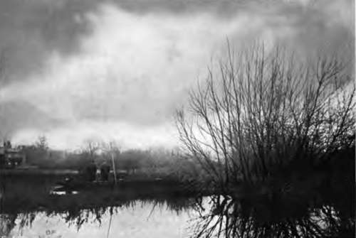
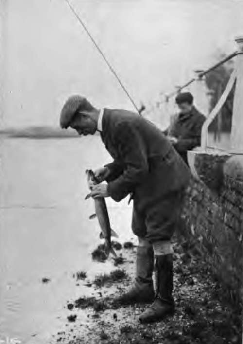
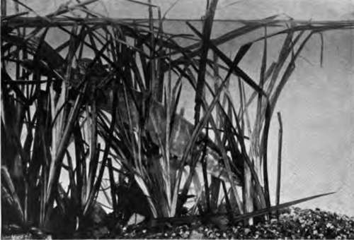
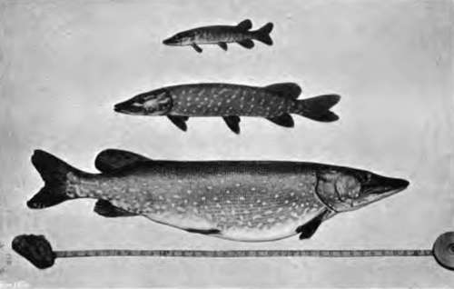

Chapter IX. Fishing For Pike: Fables And Records
Description
This section is from the book "Fishing", by Horace G. Hutchinson. Also available from Amazon: Fishing.
Chapter IX. Fishing For Pike: Fables And Records
It is a strange thing with some pike, or rather with the captors of them, that the weight of fish they catch increases largely after death in a most marvellous manner, and quite irrespective of their length and girth. A Lough Conn pike, captured September 1894, was forwarded to a fishing-tackle dealer in Great Queen Street, W.C. He lent the fish to a neighbouring angling society-previous to sending it to a taxidermist-to be "set-up'1 in a glass-case. It was the club's weekly meeting night, and the members present did not weigh the fish, but guessed it to be 37J lbs. The following Sunday it was reported in The People newspaper as 47^ lbs. Its real weight when caught was short of 30 lbs., and 28 lbs. when it reached the taxidermist. Some autumns ago an 18-lb. pike was caught in Dagen-ham Gulf, Essex, and recorded in the Fishing Gazette. A friend and I were fishing the gulf subsequently when the "keeper," and others there, told us the pike weighed 28J lbs. The following query and reply appeared a few years ago in the Fishing Gazette:- "Dear Sir,-Will you inform me in your next edition whether a pike would weigh less or more eighteen hours after being killed than it did when just taken out of the water; and what would be the increase or decrease in the weight of, say, an 1 i-lb. pike ?-Yours truly, Henry Greenway.
76.- A January Morning.
17.- A Skilled Assistant.
" Ton bridge, Kent."
" A pike of 11 lbs. ought, in theory, to weigh about 15 lbs. eighteen hours after being caught; it is a poor pike any way which cannot do that. It seems to be the general opinion that fish have developed a most scandalous habit of losing weight after capture. Of course, if this is really so, somebody ought to talk to them very seriously about it, but my experience tells me that the notion is totally unfounded. A young friend of mine caught a pike the other day, and was so pleased with the monster that he had it 'set-up' by a very capable taxidermist. About ten minutes after the fish was landed it c scaled' 11 lbs. 9 ozs., but by the time it had matured and was 1 set-up its weight had so augmented as to be 15 lbs. 11 ozs. This is nothing extraordinary; every fish that has any respect for itself goes on in just the same fashion.-Ed. Fishing Gazette, May 15, 1897."
"From the days of Gesner downwards," said Mr, Frank Buckland, "more lies have been told about the pike than any other fresh-water fish;" and the Mannheim pike that attained a length of 19 feet, and was captured in 1497 at the advanced age of 267 years, having in its gills a brass ring on which was this legend in Greek: "I am the first fish that was placed in this lake (Kaiserwag), by the hand of Frederick II., Governor of the World, on the 5th October 1230," may certainly claim to be (considering that that king was not born until 1534) the most fallacious pike on record. "Its skeleton and ring were long preserved in the cathedral of Mannheim," says Mr. Pennell in his " Book of the Pike;" "but, upon subsequent examination by a clever anatomist, it was discovered that the bones had been lengthened to fit the story-in other words, that several vertebrae had been added."
Sir John Hawkins, in his fourth edition (1784) of "The Com pleat Angler," at page 136, gives the following extract from a London paper of the 25th January 1765:-"On Tuesday last, at Lilleshall Lime Works, near Newport, Salop, a pool about nine yards deep, that had not been fished for ages, was 4 let-off' by means of a 1 level9 brought up to drain the works, when an enormous pike was found. It was drawn out by means of a rope fastened round its head and gills, in which service a great many men were employed. The pike weighed upwards of 170 lbs., and is thought to be the largest ever seen." Some time before this the parish clerk was " trolling " in this pool, " when his bait was seized by this furious fish, which by a sudden jerk pulled the clerk in, and doubtless would have devoured him also had he not, by dexterous and wonderful swimming, escaped the dreadful jaws of this voracious monster;" but this, and all such stories, may, I think, be relegated to the " limbo of myths." It is much to be regretted that accounts of " bogus fish " are furnished by some untrustworthy newspaper reporters, are recopied and disseminated by other journals, and thus are handed down to posterity.
Colonel Thornton, in his "Sporting Tour," speaks of a pike taken from a small water on Lochaber, Scotland, that weighed 146 lbs.; and of one he caught himself in Loch Alvie, of 48 lbs., on gorge-tackle. The fish measured, he says, 5 feet 4 inches in length. " Piscator " (" Practical Angler ) gives the extreme length at 4 feet 9 inches. Hofland asserts the gallant colonel could " throw the hatchet like an Indian," and that the fish was taken on a " trimmer."
The Loch Ken pike of 72 lbs., mentioned by Daniel in his " Rural Sports," also by Dr. Grier-son and Stoddart, appears to have been of authentic weight. The latter authority says " it is the largest known to have been captured in Scotland with rod and line." Its head, measuring 9 inches across the back of it, is said still to be preserved at Kenmure Castle, Galloway. But there are grave suspicions as to the genuineness of a 96-lb. pike, said to have been captured in the early part of last century near Killaloe, Ireland; also of another 60-lb. pike washed ashore dead in a storm on one of the Ballina lakes, either Conn or Cullen. But putting aside such monsters, which, to quote the words of Polonius, seem to be "very like a whale," veracious angling historians agree that pike rarely exceed 40 lbs., at all events in the British islands. The Fishing Gazette of July 19, 1902, published the following testimony to a worthy angler: "One of the best and most zealous bailiffs of 1 The Lough Conn Preservation Association' is Mr. John Macnamara; he knows both the Loughs of Conn and Cullen most thoroughly, having had an intimate acquaintance with those waters extending over twenty-three years. Macnamara is most trustworthy, and it is interesting to know that, notwithstanding the 1 fairy-tales' told of enormous pike having been killed in Loughs Conn and Cullen, during the whole of his twenty-three years* experience the largest killed weighed 44 lbs., and that was shot; the next largest, 36 lbs., was killed by a blow from an oar; and the largest he had ever seen caught by rod and line weighed 27 lbs."
18.- Protective Colouring.
19.- Changes In Marking Of Pike.
Continue to:
- prev: Chapter VIII. Fishing For Pike: History And Habits
- Table of Contents
- next: Fishing For Pike: Fables And Records. Continued